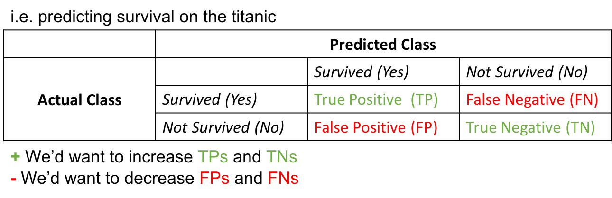
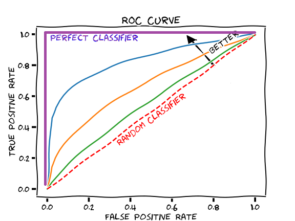

TL;DR: In applied machine learning, models are often optimised for their accuracy in predicting a target. When the target is quantitative, measures like the R^2 value and the Root Mean Squared Error (RMSE) etc., help in quantifying this accuracy. When the target is qualitative, metrics like Accuracy, Precision, Recall and several others are used. We term these measures ‘classification metrics’ for the sake of this blog post.
In this post, I explain classification metrics and provide python code to calculate them. I also produce a report including them that can be easily saved to a file for later use.
Say you’ve run your data through a classifier, and the classifier has predicted labels for your data. To judge how accurate those predictions are, you can evaluate them by the metrics explained below
The metrics covered by this post is as follows:
Generally, when someone mentions the last 3 metrics above, without a prefix, they mean them to be the macro-precision, macro-recall, and macro-F1. These metrics come in two other flavours however, the micro- and the weighted. Let’s take the example of the precision score (but the exact same descriptions can be said for recall and the F-1 score). Whilst the macro precision is simply the average of the precision scores calculated for each class, the weighted precision weights this score by the number of examples of that class before averaging across classes. This is why macro precision is a better metric for balanced data-sets while weighted precision is better for imbalanced ones. Micro precision is more involved than both, and is explained later on.
The above metrics can be calculated from a confusion matrix which is a 2D matrix showing the predicted and actual counts of a target category, therefore showing the distribution of True Positives (TPs), False Positives (FPs), True Negatives (TNs), and False Negatives (FNs) in your data.
As we see in Section 1.1 below, the equations of the above metrics require knowledge of the TP/FPs and TN/FNs. Calculating the above metrics by hand therefore requires a confusion matrix to be made beforehand.
Let’s display a confusion matrix for a binary classification (i.e. 2 classes for the target) problem to intuitively get a grasp of its contents.

The goal for a classifier is to increase TP/TNs while reducing misclassification, or the number of FP/FNs
Knowing the above, our metrics can be represented as the following equations: \(Accuracy = \frac{TP + TN}{FP + FN + TP + TN}\)
\[Precision = \frac{TP}{TP + FP}\] \[Recall = \frac{TP}{TP + FN}\] \[F_1= \frac{2}{\frac{1}{Precision} \times \frac{1}{Recall}} = 2 \times \frac{Recall \times Precision}{Recall + Precision}\]Shown above is the equation for the precision score of one class.
The macro and weighted precision scores for a binary classification (i.e. with 2 classes) can be represented as:
\[Macro Precision= \frac{Precision_{class1} + Precision_{class2}}{2}\] \[Weighted Precision= \frac{(Precision_{class1} \times c_1) + (Precision_{class2} \times c_2)}{c_1 + c_2}\]where $c_1$ and $c_2$ are the number of examples in classes $1$ and $2$
Note that if we replace Precision above with F-1 score or Recall, the formulas would still work!
To calculate micro precision, instead of taking measurements of precision for each class (i.e. taking TPs and FPs for each class), we compute TPs and FPs out of the total pool of examples.
Take the confusion matrix below for another binary classification problem, classifying photos of a cat or a dog.
We calculate the TP and FP out of the total number of examples as follows: 
And therefore our micro precision is: 
In a later blog post, we’ll explore two additional metrics briefly described below, as they are derived simultaneously while training a machine learning model.

It ultimately depends on your research question. If you’re classifying who has diabetes from a patient pool, for example, you’d want recall to be high. If you’re recommending movies to a user, you’d want the user to like the movies you recommended, so you’d want precision to be high. Overall, with a balanced data-set, you’d want accuracy to be high. With an un-balanced data-set, you’d want the weighted F1-score to be high.
In this section, we write some code to generate the metrics above.
#first we import necessary packages
from sklearn import metrics
import pandas as pd
import os
import numpy as np
After training a classifier to generate predictions, we compare predictions to true labels and apply the metrics above.
Below, we read in a file containing predictions and true labels for a sentiment classification problem (i.e. classifying the sentiment of text entries as either positive, negative or neutral). This is a multi-class problem, as we have more than 2 classes to predict.
In the resulting data-frame, we have a column housing true labels (i.e. sentiment), and one housing predictions (i.e. predictions)
#insert the data-set you'd want to read
df = pd.read_csv('predictions.csv')
We convert numerical labels generated by our classifier to categorical labels for ease of interpretation.
sentiment_to_categories_dict = {
2: 'positive',
1: 'neutral',
0: 'negative'
}
df.sentiment = df.sentiment.apply(lambda sentiment: sentiment_to_categories_dict[sentiment])
df.head()
| Unnamed: 0 | entry | sentiment | predictions | |
|---|---|---|---|---|
| 0 | 0 | Up early ferry to Rangitoto walked up snack at... | positive | neutral |
| 1 | 1 | P home on time. Nap then food shop girls over ... | neutral | negative |
| 2 | 2 | Morning nap did not get up until late shower t... | neutral | neutral |
| 3 | 3 | N. Slept well but tired. Busy board at start b... | neutral | neutral |
| 4 | 4 | N. Slept well woken by post. Slow but steady n... | neutral | neutral |
We store the predictions and true labels on separate vectors
#True values (actual)
y_true = df['sentiment']
#predicted values (from model output)
y_pred = df['predictions']
We then create row and column labels to append to our confusion matrix later on
#get row and column labels for confusion matrix
#get unique row labels
row_labels = np.unique(y_true)
#get column labels
column_labels = [label + "_predicted" for label in row_labels]
Here we create a confusion matrix, passing in the row and column labels we create above
#create a confusion matrix object and display it (with labels)
c_m = pd.DataFrame(metrics.confusion_matrix(y_true,y_pred), index=row_labels, columns=column_labels)
We display the confusion matrix:
c_m
| negative_predicted | neutral_predicted | positive_predicted | |
|---|---|---|---|
| negative | 6 | 26 | 3 |
| neutral | 12 | 40 | 10 |
| positive | 8 | 21 | 2 |
…as a data-frame…with all of the other metrics mentioned above:
#display all diagnostics as a data-frame, save results to a variable too
confusion_matrix = pd.DataFrame(metrics.classification_report(y_true,y_pred, digits=3, output_dict=True))
confusion_matrix
| negative | neutral | positive | accuracy | macro avg | weighted avg | |
|---|---|---|---|---|---|---|
| precision | 0.230769 | 0.459770 | 0.133333 | 0.375 | 0.274624 | 0.318094 |
| recall | 0.171429 | 0.645161 | 0.064516 | 0.375 | 0.293702 | 0.375000 |
| f1-score | 0.196721 | 0.536913 | 0.086957 | 0.375 | 0.273530 | 0.334918 |
| support | 35.000000 | 62.000000 | 31.000000 | 0.375 | 128.000000 | 128.000000 |
Notice that another metric called support is included in the classification report. Support is simply the number of examples for each class.
We can save this full classification report to a file, for later indexing/reporting.
#save results to a file
confusion_matrix.to_csv('fileName.csv', index=True)